Fast Marching in 2D
This tour explores the use of Fast Marching methods in 2-D.
Contents
Installing toolboxes and setting up the path.
You need to download the following files: signal toolbox, general toolbox and graph toolbox.
You need to unzip these toolboxes in your working directory, so that you have toolbox_signal, toolbox_general and toolbox_graph in your directory.
For Scilab user: you must replace the Matlab comment '%' by its Scilab counterpart '//'.
Recommandation: You should create a text file named for instance numericaltour.sce (in Scilab) or numericaltour.m (in Matlab) to write all the Scilab/Matlab command you want to execute. Then, simply run exec('numericaltour.sce'); (in Scilab) or numericaltour; (in Matlab) to run the commands.
Execute this line only if you are using Matlab.
getd = @(p)path(p,path); % scilab users must *not* execute this
Then you can add the toolboxes to the path.
getd('toolbox_signal/'); getd('toolbox_general/'); getd('toolbox_graph/');
Shortest Path for Isotropic Metrics
Shortest paths are 2D curves that minimize a weighted length according to a given metric \(W(x)\) for \(x \in [0,1]^2\). The metric is usually computed from an input image \(f(x)\).
The length of a curve \( t \in [0,1] \mapsto \gamma(t) \in [0,1]^2 \) is \[ L(\gamma) = \int_0^1 W(\gamma(t)) \norm{\gamma'(t)} \text{d} t. \]
Note that \(L(\gamma)\) is invariant under re-parameterization of the curve \(\gamma\).
A geodesic curve \(\gamma\) between two points \(x_0\) and \(x_1\) has minimum length among curves joining \(x_0\) and \(x_1\), \[ \umin{\ga(0)=x_0, \ga(1)=x_1} L(\ga). \] A shortest curve thus tends to pass in areas where \(W\) is small.
The geodesic distance between the two points is then \(d(x_0,x_1)=L(\gamma)\) is the geodesic distance according to the metric \(W\).
Pixel values-based Geodesic Metric
The geodesic distance map \(D(x)=d(x_0,x)\) to a fixed starting point \(x_0\) is the unique viscosity solution of the Eikonal equation \[ \norm{ \nabla D(x)} = W(x) \qandq D(x_0)=0. \]
This equation can be solved numerically in \(O(N \log(N))\) operation on a discrete grid of \(N\) points.
We load the input image \(f\).
clear options; n = 300; name = 'road2'; f = rescale( load_image(name, n) );
Display the image.
clf; imageplot(f);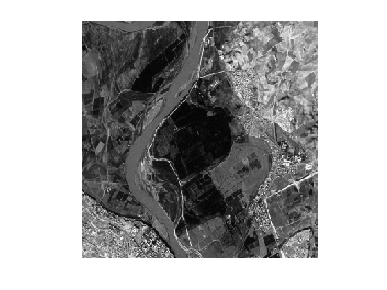
Define start and end points \(x_0\) and \(x_1\) (note that you can use your own points).
x0 = [14;161]; x1 = [293;148];
The metric is defined according to \(f\) in order to be low at pixel whose value is close to \(f(x)\). A typical example is \[ W(x) = \epsilon + \abs{f(x_0)-f(x)} \] where the value of \( \epsilon>0 \) should be increased in order to obtain smoother paths.
epsilon = 1e-2; W = epsilon + abs(f-f(x0(1),x0(2)));
Display the metric \(W\).
clf; imageplot(W);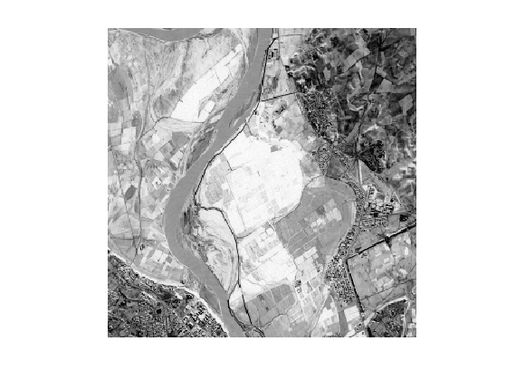
Set options for the propagation: infinite number of iterations, and stop when the front hits the end point.
options.nb_iter_max = Inf; options.end_points = x1;
Perform the propagation, so that \(D(a,b)\) is the geodesic distance between the pixel \(x_1=(a,b)\) and the starting point \(x_0\). Note that the function perform_fast_marching takes as input the inverse of the metric \(1/W(x)\).
[D,S] = perform_fast_marching(1./W, x0, options);
Display the propagated distance map \(D\). We display in color the distance map in areas where the front has propagated, and leave in black and white the area where the front did not propagate.
clf; hold on; imageplot( convert_distance_color(D,f) ); h = plot(x0(2),x0(1), '.r'); set(h, 'MarkerSize', 25); h = plot(x1(2),x1(1), '.b'); set(h, 'MarkerSize', 25);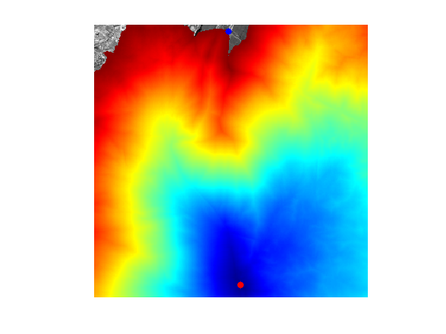
Exercice 1: (check the solution) Using options.nb_iter_max, display the progressive propagation. This corresponds to displaying the front \( \enscond{x}{D(x) \leq t} \) for various arrival times \(t\).
exo1;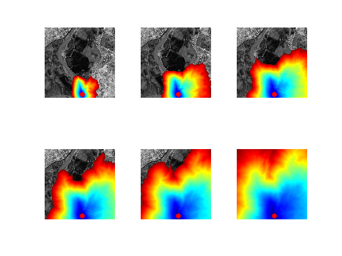
Geodesic Curve Extraction
Once the geodesic distance map \(D(x)\) to a starting point \(x_0\) is computed, the geodesic curve between any point \(x_1\) and \(x_0\) extracted through gradient descent \[ \ga'(t) = - \eta_t \nabla D(\ga(t)), \] where \(\eta_t>0\) controls the parameterization speed of the resulting curve. To obtain unit speed parameterization, one can use \(\eta_t = \norm{\nabla D(\ga(t))}^{-1}\).
Recompute the geodesic distance map \(D\) on the whole grid.
options.nb_iter_max = Inf; options.end_points = []; [D,S] = perform_fast_marching(1./W, x0, options);
Display \(D\).
clf;
imageplot(D);
colormap jet(256);
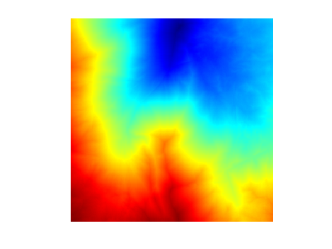 Compute the gradient \(G_0(x) = \nabla D(x) \in \RR^2\) of the distance map. Use centered differences.
options.order = 2; G0 = grad(D, options);
Normalize the gradient to obtained \(G(x) = G_0(x)/\norm{G_0(x)}\), in order to have unit speed geodesic curve (parameterized by arc length).
G = G0 ./ repmat( sqrt( sum(G0.^2, 3) ), [1 1 2]);
Display \(G\).
clf;
imageplot(G);
colormap jet(256);
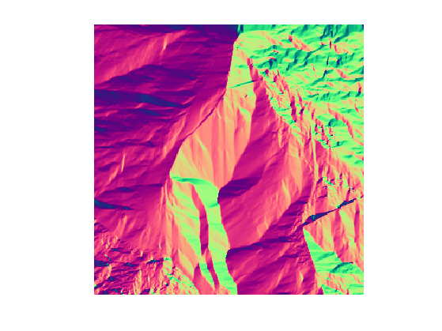 The geodesic is then numerically computed using a discretized gradient descent, which defines a discret curve \( (\ga_k)_k \) using \[ \ga_{k+1} = \ga_k - \tau G(\ga_k) \] where \(\ga_k \in \RR^2\) is an approximation of \(\ga(t)\) at time \(t=k\tau\), and the step size \(\tau>0\) should be small enough.
Step size \(\tau\) for the gradient descent.
tau = .8;
Initialize the path with the ending point.
gamma = x1;
Define a shortcut to interpolate \(G\) at a 2-D points. Warning: the interp2 switches the role of the axis ...
Geval = @(G,x)[interp2(1:n,1:n,G(:,:,1),x(2),x(1)); ...
interp2(1:n,1:n,G(:,:,2),x(2),x(1)) ];
Compute the gradient at the last point in the path, using interpolation.
g = Geval(G, gamma(:,end));
Perform the descent and add the new point to the path.
gamma(:,end+1) = gamma(:,end) - tau*g;
Exercice 2: (check the solution) Perform the full geodesic path extraction by iterating the gradient descent. You must be very careful when the path become close to \(x_0\), because the distance function is not differentiable at this point. You must stop the iteration when the path is close to \(x_0\).
exo2;
Display the curve on the image background.
clf; hold on; imageplot(f); h = plot(gamma(2,:),gamma(1,:), '.b'); set(h, 'LineWidth', 2); h = plot(x0(2),x0(1), '.r'); set(h, 'MarkerSize', 25); h = plot(x1(2),x1(1), '.b'); set(h, 'MarkerSize', 25); axis ij;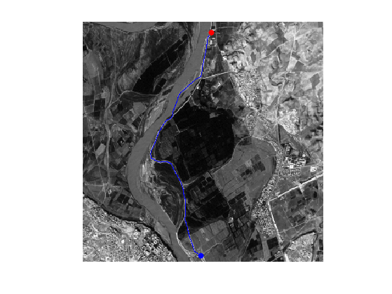
Display the curve on the distance background.
clf; hold on; imageplot(D); colormap jet(256); h = plot(gamma(2,:),gamma(1,:), '.b'); set(h, 'LineWidth', 2); h = plot(x0(2),x0(1), '.r'); set(h, 'MarkerSize', 25); h = plot(x1(2),x1(1), '.b'); set(h, 'MarkerSize', 25); axis ij;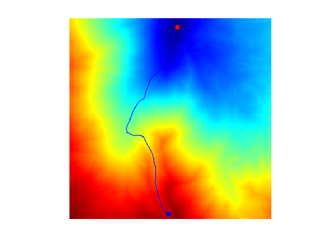
Exercice 3: (check the solution) Study the influence of the \(\epsilon\) parameter.
exo3;

Exercice 4: (check the solution) Perform the shortest path extraction for various images such as 'cavern' or 'mountain'.
exo4;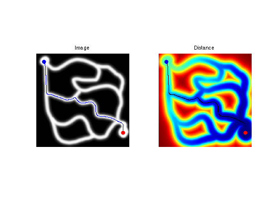
Edge-based Geodesic Metric
It is possible to extract the boundary of an object using shortest paths that follows region of high gradient.
First we load an image \(f\).
n = 256;
name = 'cortex';
f = rescale( sum(load_image(name,n),3) );
Display it.
clf; imageplot(f);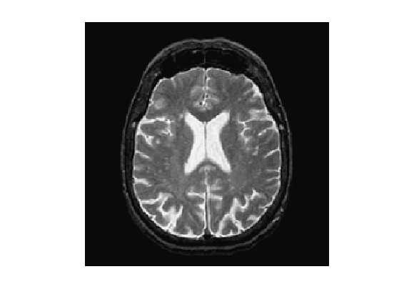
An edge-attracting potential \(W(x)\) should be small in regions of high gradient. A popular choice is \[ W(x) = \frac{1}{\epsilon + G_\si \star G(x)} \qwhereq G(x) = \norm{\nabla f(x)}, \] and where \(G_\si\) is a Gaussian kernel of variance \(\si^2\).
Compute the gradient norm \(G(x)\).
G = grad(f,options); G = sqrt( sum(G.^2,3) );
Smooth it by \(G_\si\).
sigma = 3; Gh = perform_blurring(G,sigma);
Display the smoothed gradient \( G \star G_\si \).
clf; imageplot(Gh);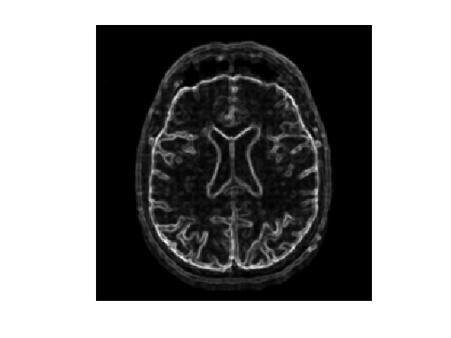
Compute the metric.
epsilon = 0.01; W = 1./( epsilon + Gh );
Display it.
clf; imageplot(W);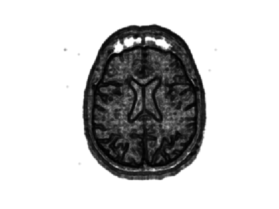
Set two starting point \( \Ss = \{x_0^1,x_0^2\} \) (you can use other points).
x0 = [ [136;53] [123;205]];
Compute the Fast Marching from these two base points.
options.nb_iter_max = Inf; options.end_points = []; [D,S,Q] = perform_fast_marching(1./W, x0, options);
Display the geodesic distance (with color normalization).
clf; hold on; imageplot( perform_hist_eq(D,'linear') ); h = plot(x0(2,:),x0(1,:), '.r'); set(h, 'MarkerSize', 25); colormap jet(256);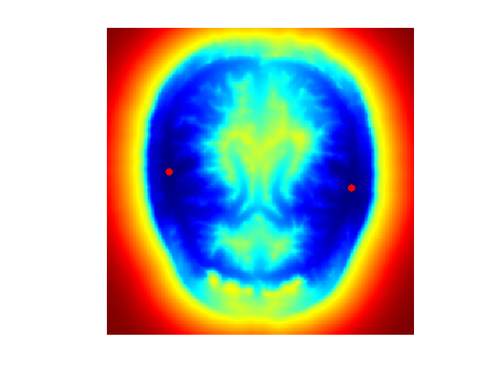
The Voronoi segmentation associated to \(\Ss\) is \[ \Cc_i = \enscond{x}{ \forall j \neq i, \; d(x_0^i,x) \leq d(x_0^j,x) }. \]
This Voronoi segmentation is computed during the Fast Marching propagation and is encoded in the partition function \(Q(x)\) using \(\Cc_i = \enscond{x}{Q(x)=i}\).
Display the distance and the Voronoi segmentation.
clf; hold on; A = zeros(n,n,3); A(:,:,1) = rescale(Q); A(:,:,3) = f; imageplot(A); h = plot(x0(2,:),x0(1,:), '.g'); set(h, 'MarkerSize', 25);

Exercice 5: (check the solution) Extract the set of points that are along the boundary of the Voronoi region. This corresponds for instance to the points of the region \( \enscond{x}{Q(x)=1} \) that have one neighbor inside the region \( \enscond{x}{Q(x)=2} \). Compute the geodesic distance \(D(x)\) at these points, and choose two points \(a\) and \(b\) on this boundary that have small values of \(D\).
exo5;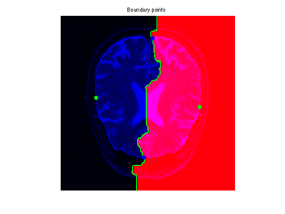
Exercice 6: (check the solution) Extract the geodesics joining \(a\) and \(b\) to the two starting points (this makes 4 geodesic curves). Use them to perform segmentation.
exo6;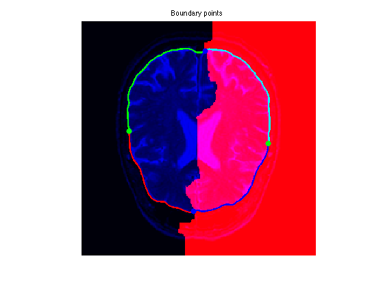
Vessel Segmentation and Centerline Extraction
One can extract a network of geodesic curve starting from a central point to detect vessels in medical images.
Load an image. This image is extracted from the DRIVE database of retinal vessels.
n = 256;
name = 'vessels';
f = rescale(load_image(name, n));
Display it.
clf; imageplot(f);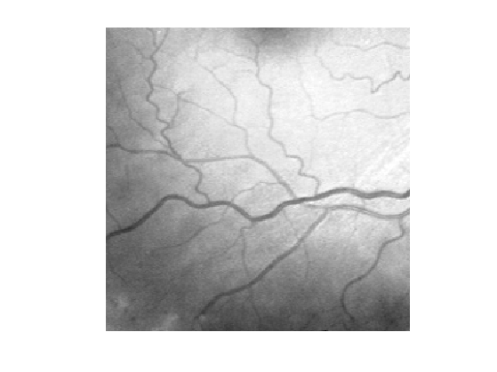
We clean the image by substracting the smoothly varying background \[ f_1 = f - G_\si \star f, \] where \(G_\si\) is a Gaussian kernel of variance \(\si^2\). Computing \(f_1\) corresponds to a high pass filtering.
sigma = 20; f1 = perform_blurring(f,sigma) - f;
Display this normalized image.
clf; imageplot(f1);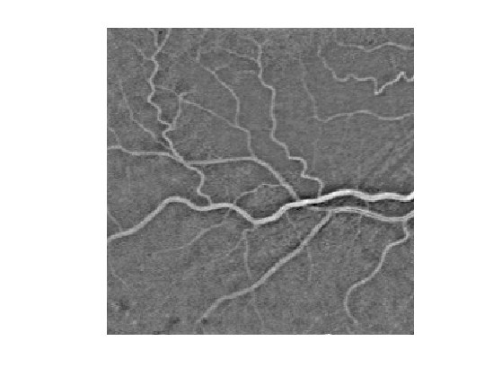
We compute a metric tthat is small for large values of \(f_1\): \[ W(x) = \epsilon + \abs{f_1(x)-c} \qwhereq c = \umax{x} f_1(x). \]
c = max(f1(:)); epsilon = 1e-2; W = epsilon + abs(f1-c);
Display the metric.
clf, imageplot(W);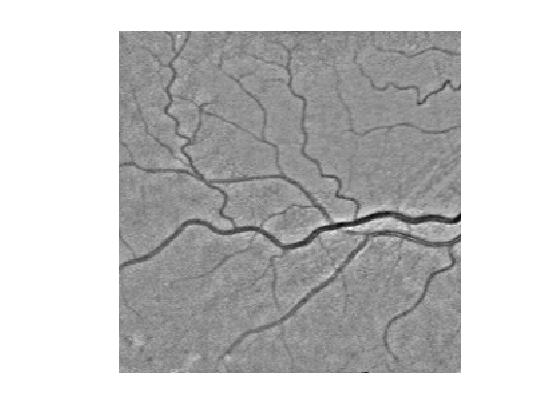
Select a central point \(x_0\) for the network.
x0 = [142;226];
Exercice 7: (check the solution) Perform partial propagations from \(x_0\).
exo7;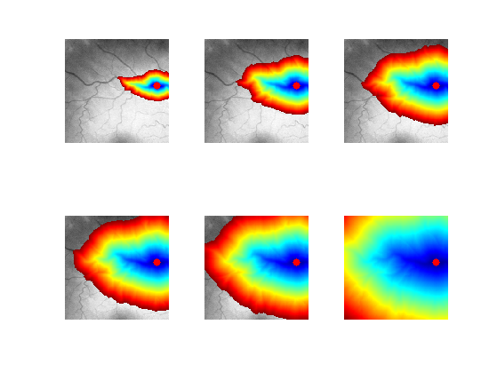
Exercice 8: (check the solution) Extract geodesics joining several points \(x_1\) to the central point \(x_0\).
exo8;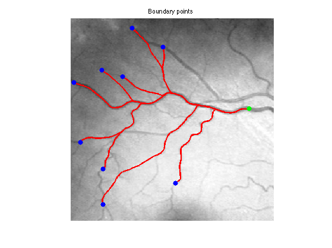
Dual Propagation
In order to speed up geodesic extraction, one can perform the propagation from both the start point \(x_0^1\) and end point \(x_0^2\).
Boundary points.
x0 = [[143;249] [174;9]];
Exercice 9: (check the solution) Perform the dual propagation, and stop it when the front meet. Extract the two half geodesic curves.
exo9;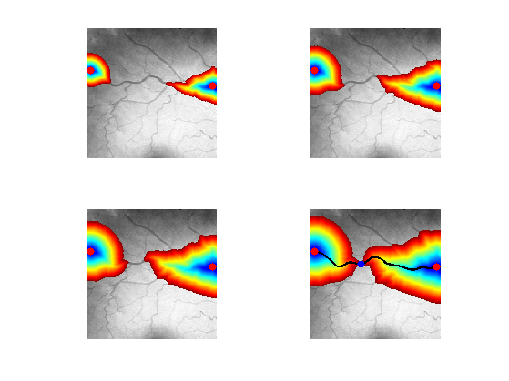